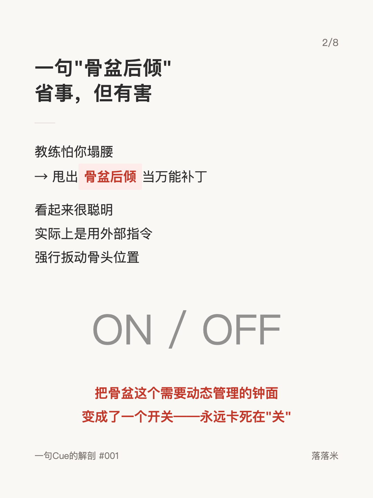
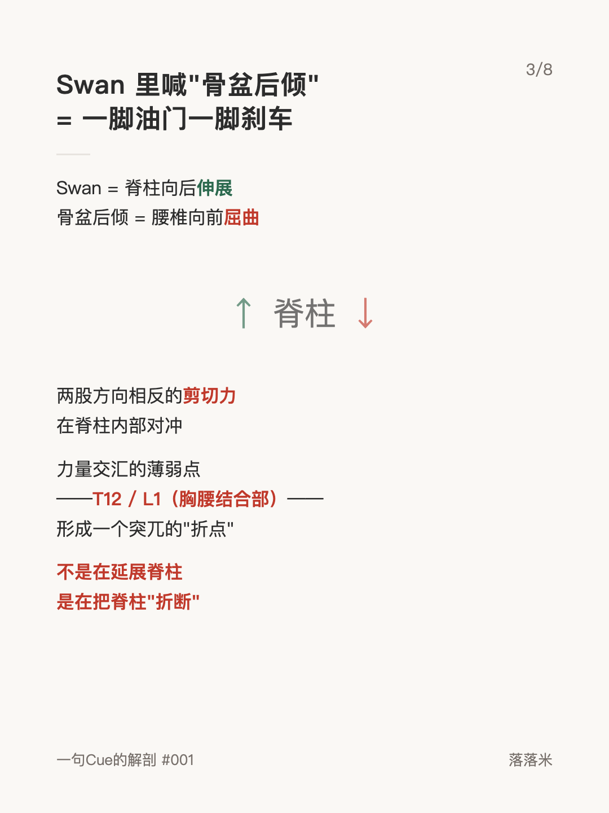
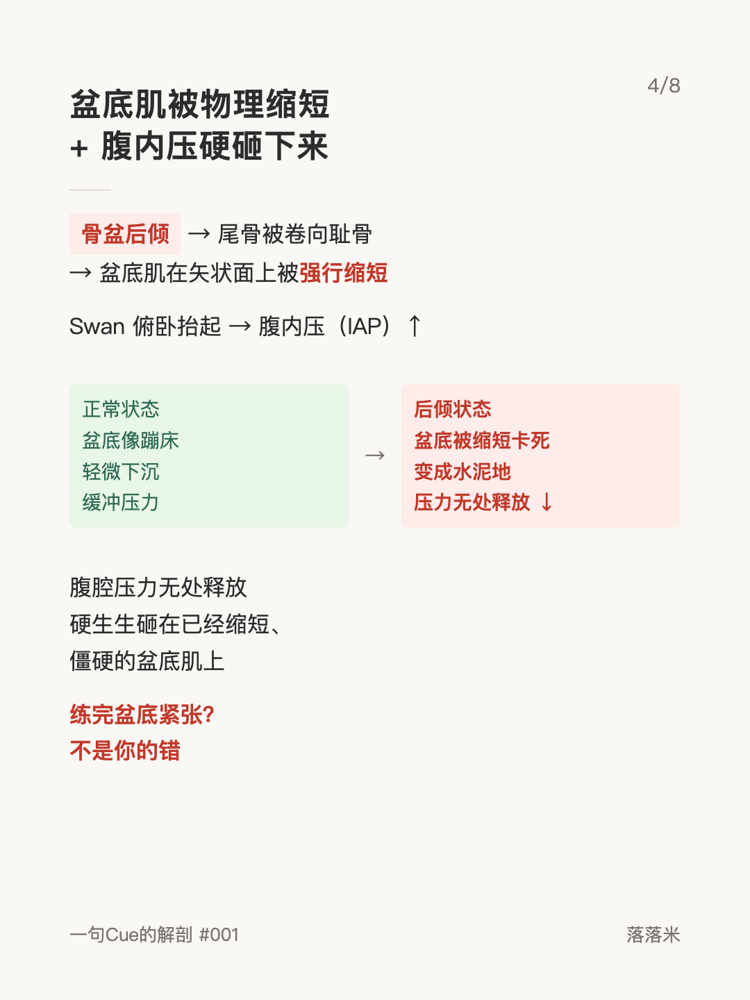
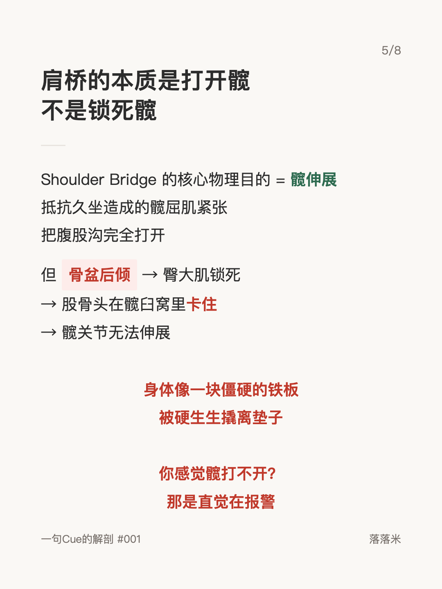
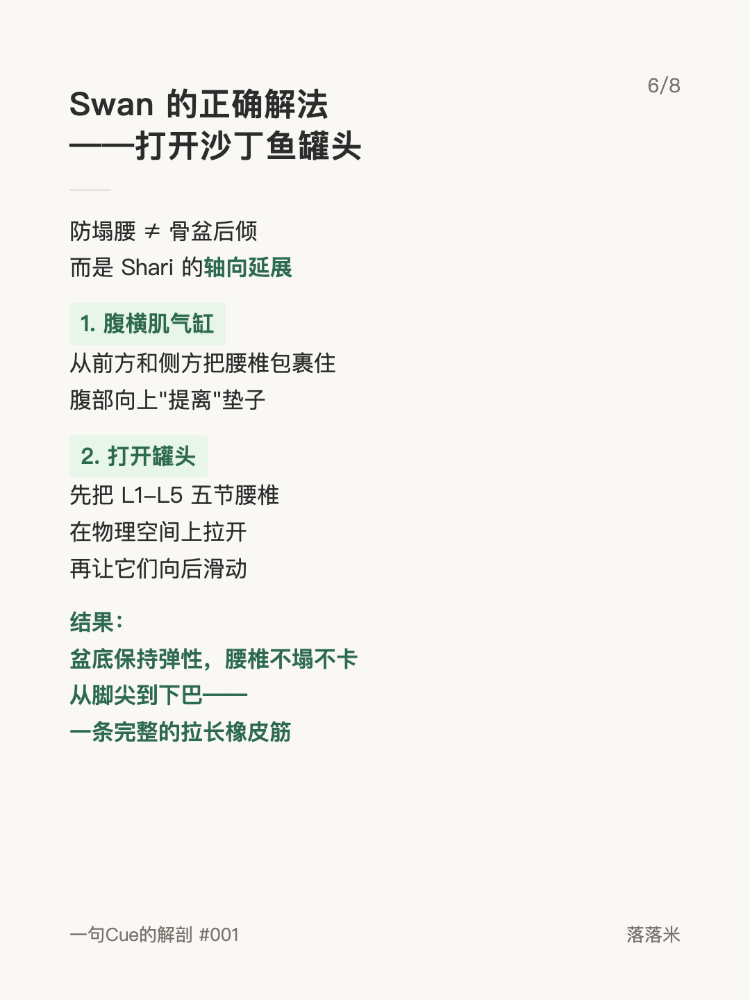
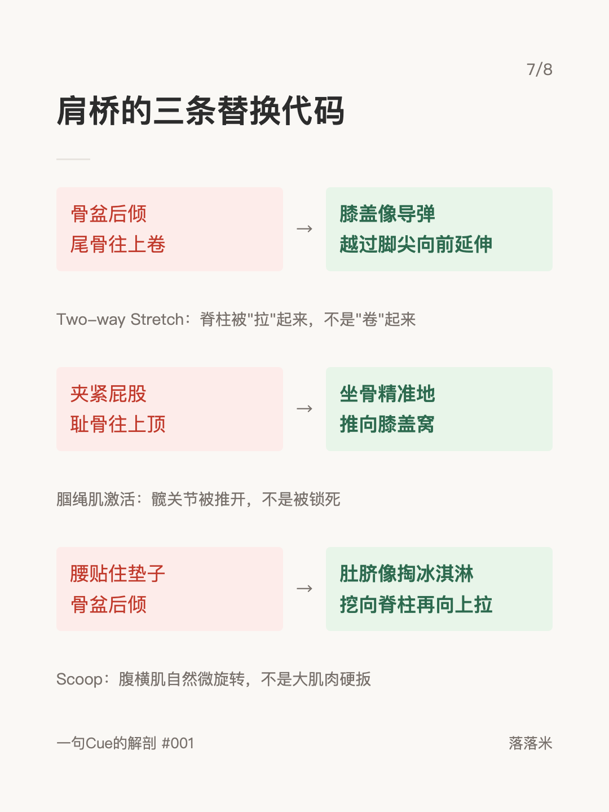
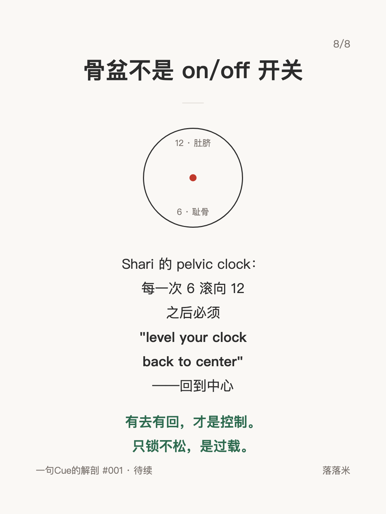

解剖学系列 #001
骨盆后倾——普拉提圈被滥用最多的废口令

1 / 8

2 / 8

3 / 8

4 / 8

5 / 8

6 / 8

7 / 8

8 / 8
← 左右滑动浏览全部卡片 →
"骨盆后倾"是教练怕你塌腰时甩出的万能补丁，但它把一个需要动态管理的钟面变成了永远卡死在"关"的开关。在 Swan 里它让两股方向相反的剪切力在 T12/L1 对冲，在肩桥里它把股骨头卡死在髋臼窝——练完盆底紧张、髋打不开，都不是你的错。
这组卡片拆解了"骨盆后倾"在伸展类动作中的完整力学代价，并还原古典普拉提的正解：轴向延展代替强行扳骨头，pelvic clock 有去有回——有去有回才是控制，只锁不松是过载。